컴퓨터응용선반기능사 (2016-01-24 기출문제)
1과목: 기계재료 및 요소
1. 접착제, 껌, 전기 절연재료에 이용되는 플라스틱 종류는?
- 폴리초산비닐계
- 셀룰로오스계
- 아크릴계
- 불소계
(정답률: 72%)

2. 다음 중 표면 경화법의 종류가 아닌 것은?
- 침탄법
- 질화법
- 고주파 경화법
- 심냉 처리법
(정답률: 76%)
3. 금속이 탄성한계를 초과한 힘을 받고도 파괴되지 않고 늘어나서 소성변형이 되는 성질은?
- 연성
- 취성
- 경도
- 강도
(정답률: 83%)
4. 주철의 결점인 여리고 약한 인성을 개선하기 위하여 먼저 백주철의 주물을 만들고, 이것을 장시간 열처리하여 탄소의 상태를 분해 또는 소실시켜 인성 또는 연성을 증가시킨 주철은?
- 보통 주철
- 합금 주철
- 고급 주철
- 가단 주철
(정답률: 65%)
5. 주철의 특성에 대한 설명으로 틀린 것은?
- 주조성이 우수하다.
- 내마모성이 우수하다.
- 강보다 인성이 크다.
- 인장강도보다 압축강도가 크다.
(정답률: 61%)
6. Cu와 Pb 합금으로 항공기 및 자동차의 베어링 메탈로 사용되는 것은?
- 양은 (nickel silver)
- 켈밋 (kelmet)
- 배빗 메탈(babbit metal)
- 애드미럴티 포금(admiralty gun metal)
(정답률: 66%)
7. 주조용 알루미늄 합금이 아닌 것은?
- Al-Cu계
- Al-Si계
- Al-Zn-Mg계
- Al-Cu-Si계
(정답률: 67%)
8. 교차하는 두 축의 운동을 전달하기 위하여 원추형으로 만든 기어는?
- 스퍼 기어
- 헬리컬 기어
- 웜 기어
- 베벨 기어
(정답률: 51%)
9. 다음 중 전동용 기계요소에 해당하는 것은?
- 볼트와 너트
- 리벳
- 체인
- 핀
(정답률: 78%)
10. 나사의 피치와 리드가 같다면 몇 줄 나사에 해당이 되는가?
- 1줄 나사
- 2줄 나사
- 3줄 나사
- 4줄 나사
(정답률: 71%)
11. 나사가 축을 중심으로 한 바퀴 회전할 때 축방향으로 이동한 거리는?
- 피치
- 리드
- 리드각
- 백래쉬
(정답률: 76%)
12. 압축코일스프링에서 코일의 평균지름이 50㎜, 감김 수가 10회, 스프링 지수가 5일 때, 스프링 재료의 지름은 약 몇 ㎜인가?
- 5
- 10
- 15
- 20
(정답률: 65%)
13. 축의 원주에 많은 키를 깎은 것으로 큰 토크를 전달시킬 수 있고, 내구력이 크며 보스와의 중심축을 정확하게 맞출 수 있는 것은?
- 성크 키
- 반달 키
- 접선 키
- 스플라인
(정답률: 60%)
14. 인장시험에서 시험편의 절단부 단면적이 14mm2이고, 시험 전 시험편의 초기단면적이 20mm2일 때 단면수축률은?(오류 신고가 접수된 문제입니다. 반드시 정답과 해설을 확인하시기 바랍니다.)
- 70%
- 80%
- 30%
- 20%
(정답률: 60%)
15. 롤러 체인에 대한 설명으로 잘못된 것은?
- 롤러 링크와 판 링크를 서로 교대로 하여 연속적으로 연결한 것을 말한다.
- 링크의 수가 짝수이면 간단히 결합되지만, 홀수이면 오프셋 링크를 사용하여 연결한다.
- 조립 시에는 체인에 초기장력을 가하여 스프로킷 휠과 조립한다.
- 체인의 링크를 잇는 핀과 핀 사이의 거리를 피치라고 한다.
(정답률: 43%)
2과목: 기계제도(절삭부분)
16. 대칭형인 대상물을 외형도의 절반과 온단면도의 절반을 조합하여 나타낸 단면도는?
- 한쪽 단면도
- 계단 단면도
- 부분 단면도
- 회전 단면도
(정답률: 59%)
17. 기어를 제도할 때 가는 1점 쇄선으로 나타내는 것은?
- 이골원
- 피치원
- 잇봉우리원
- 잇줄 방향
(정답률: 70%)
18. 그림과 같이 축에 가공되어 있는 키 홈의 형상을 투상한 투상도의 명칭으로 가장 적합한 것은?
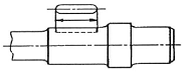
- 회전 투상도
- 국부 투상도
- 부분 확대도
- 대칭 투상도
(정답률: 78%)
19. 감속기 하우징의 기름 주입구 나사가 PF 1/2 - A 로 표시되어 있을 때 이 나사는?
- 관용 평행나사, A 급
- 관용 평행나사, 바깥지름 1/2 인치
- 관용 테이퍼나사, A 급
- 관용 테이퍼나사, 바깥지름 1/2 인치
(정답률: 39%)
20. 제 3각법에 대한 설명 중 틀린 것은?
- 물체를 제 3면각 공간에 놓고 투상하는 방법이다.
- 눈→물체→투상면의 순서로 투상도를 얻는다.
- 정면도의 우측에는 우측면도가 위치한다.
- KS에서는 특별한 경우를 제외하고는 제3각법으로 투상하는 것을 원칙으로 하고 있다.
(정답률: 67%)
21. 치수와 같이 사용될 수 없는 치수 보조 기호는?
- t
- ∅
- 回
- □
(정답률: 78%)
22. 기하 공차의 종류 중 모양 공차에 해당하는 것은?
- 평행도 공차
- 동심도 공차
- 원주 흔들림 공차
- 원통도 공차
(정답률: 60%)
23. 그림과 같은 정면도와 좌측면도에 가장 적합한 평면도는?
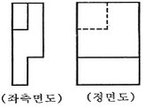
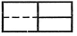
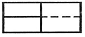
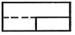
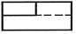
(정답률: 52%)
24. 치수
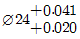
의 IT 공차 등급은? (단, 아래의 도표를 참고하시오.)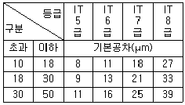
- 5급
- 6급
- 7급
- 8급
(정답률: 75%)
25. 그림과 같은 표면 줄무늬 방향기호의 설명으로 옳은 것은?
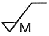
- 가공으로 생긴 선이 방사상
- 가공으로 생긴 선이 거의 동심원
- 가공으로 생긴 선이 두 방향으로 교차
- 가공으로 생긴 선이 여러 방향
(정답률: 60%)
26. 탭 작업 중 탭의 파손 원인으로 거리가 먼 것은?
- 탭이 경사지게 들어간 경우
- 탭이 구멍 바닥에 부딪혔을 경우
- 탭이 소재보다 경도가 높은 경우
- 구멍이 너무 작거나 구부러진 경우
(정답률: 67%)
27. 다음 중 진원도를 측정할 때 가장 적당한 측정기는?
- 게이지 블록
- 한계 게이지
- 다이얼 게이지
- 오토 콜리미터
(정답률: 63%)
28. 선반의 주축에 대한 설명으로 틀린 것은?
- 합금강(Ni-Cr강)을 사용하여 제작한다.
- 무게를 감소시키기 위하여 속이 빈 축으로 한다.
- 끝부분은 자콥스 테이퍼(jacobs taper) 구멍으로 되어 있다.
- 주축 회전 속도의 변환은 보통 계단식 변속으로 등비급수 속도열을 이용한다.
(정답률: 46%)
29. 아래 그림은 절삭저항의 3분력을 나타내고 있다. P점에 해당되는 분력은?
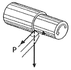
- 배분력
- 주분력
- 횡분력
- 이송분력
(정답률: 56%)
30. 선반가공에서 방진구의 주된 사용목적으로 가장 적합한 것은?
- 소재의 중심을 잡기 위해 사용한다.
- 소재의 회전을 원활하게 하기위해 사용한다.
- 척에 소재의 고정을 단단히 하기위해 사용한다.
- 지름이 작고 길이가 긴 소재를 가공할 때 소재의 휨이나 떨림을 방지하기 위해 사용한다.
(정답률: 76%)
3과목: 기계공작법
31. 다음 중 나사의 유효지름을 측정할 때 가장 정밀도가 높은 직접측정법은?
- 삼침법에 의한 측정
- 투영기에 의한 측정
- 공구현미경에 의한 측정
- 나사 마이크로미터에 의한 측정
(정답률: 39%)
32. 절삭공구에 치핑이 발생하는 원인으로 가장 거리가 먼 것은?
- 충격에 약한 절삭공구를 사용할 때
- 절삭공구 인선에 강한 충격을 받을 경우
- 절삭공구 인선에 절삭저항의 변화가 큰 경우
- 고속도강 같이 점성이 큰 재질의 절삭공구를 사용할 경우
(정답률: 54%)
33. 빌트업 에지(built-up edge)의 발생을 감소시키기 위한 방법으로 옳은 것은?
- 날끝을 둔하게 한다.
- 절삭 깊이를 크게 한다.
- 절삭 속도를 느리게 한다.
- 공구의 경사각을 크게 한다.
(정답률: 60%)
34. 다음 측정기 중 스크라이버 (scriber)를 사용하여 금긋기 작업을 할 수 있는 것은?
- 한계 게이지
- 마이크로미터
- 다이얼 게이지
- 하이트 게이지
(정답률: 63%)
35. 가늘고 긴 일정한 단면 모양의 많은 날을 가진 절삭공구를 사용하여 키 홈, 스플라인 홈, 다각형의 구멍 등 외형과 내면형상을 가공하기에 적합한 절삭방법은?
- 브로칭
- 방전 가공
- 호빙 가공
- 스퍼터 에칭
(정답률: 51%)
36. 공작물을 테이블에 고정하고, 절삭 공구를 회 전 운동시키면서 적당한 이송을 주면서 평면을 가공하는 공작기계는?
- 선반
- 밀링머신
- 보링머신
- 드릴링머신
(정답률: 71%)
37. 일반적으로 절삭온도를 측정하는 방법이 아닌 것은?
- 방사능에 의한 방법
- 열전대에 의한 방법
- 칩의 색깔에 의한 방법
- 칼로리미터에 의한 방법
(정답률: 70%)
38. 성형 연삭작업을 할 때 숫돌바퀴의 형상이 균일하지 못하거나 가공물의 영향을 받아 숫돌바퀴의 형상이 변화될 때, 연삭숫돌의 외형을 수정하여 정확한 형상으로 가공하는 작업은?
- 로딩
- 드레싱
- 트루잉
- 그라인딩
(정답률: 50%)
39. 여러 가지 부속장치를 사용하여 밀링커터, 엔드밀, 드릴, 바이트, 호브, 리머 등을 연삭할 수 있으며 연삭 정밀도가 높은 연삭기는?
- 만능 공구 연삭기
- 초경 공구 연삭기
- 특수 공구 연삭기
- CNC 만능 연삭기
(정답률: 62%)
40. 소재의 피로강도 및 기계적인 성질을 개선하기 위하여 금속으로 만든 작은 덩어리를 가공물 표면에 고속으로 분사하는 가공법은?
- 숏 피닝
- 방전가공
- 배럴가공
- 슈퍼 피니싱
(정답률: 49%)
4과목: CNC공작법 및 안전관리
41. 상향절삭과 비교한 하향절삭의 특징으로 틀린 것은?
- 기계의 강성이 낮아도 무방하다.
- 상향절삭에 비하여 인선의 수명이 길다.
- 이송나사의 백래시를 완전히 제거하여야 한다.
- 절삭력이 하향으로 작용하여 가공물 고정이 유리하다.
(정답률: 53%)
42. 절삭속도 70m/min, 밀링 커터의 날 수 10, 커터의 지름 140mm, 1날 당 이송 0.15mm로 밀링 가공할 때, 테이블의 이송속도는 약 얼마인가?
- 144m/min
- 144mm/min
- 239m/min
- 239mm/min
(정답률: 35%)
43. CNC선반에서 1초 동안 휴지(dwell)를 주는 지령으로 틀린 것은?
- G04 U1.0
- G04 X1.0
- G04 P1000
- G04 W1000
(정답률: 54%)
44. CNC기계의 서보기구에서 기계적 운동 상태를 전기적 신호로 바꾸는 회전 피드백 장치는?
- 엔코더
- 서미스터
- 압력 센서
- 초음파 센서
(정답률: 61%)
45. 머시닝센터에서 사용되는 자동공구 교환장치로 옳은 것은?
- APC
- AJC
- ATC
- AVC
(정답률: 72%)
46. 머시닝센터 프로그램에서 공작물 좌표계를 설정하는 G코드가 아닌 것은?
- G57
- G58
- G59
- G60
(정답률: 61%)
47. CNC선반 작업을 할 때 안전 및 유의사항으로 틀린 것은?
- 프로그램을 입력할 때 소수점에 유의한다.
- 가공 중에는 안전문을 반드시 닫아야 한다.
- 가공 중 위급한 상황에 대비하여 항상 비상정지 버튼을 누를 수 있도록 준비한다.
- 공작물에 칩이 감길 때는 문을 열고 주축이 회전상태에 있을 때 갈고리를 이용하여 제거한다.
(정답률: 82%)
48. 아래 프로그램의 S1000 부분의 의미로 맞는 것은?
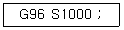
- 1000m/sec
- 1000m/min
- 1000m/h
- 1000rpm
(정답률: 53%)
49. 아래 그림에서 CNC선반 공구 인선을 보정할 때 우측 보정(G42)을 나타낸 것끼리 짝지어진 것은?
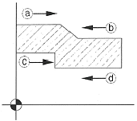
- ⓐ, ⓒ
- ⓐ, ⓓ
- ⓑ, ⓒ
- ⓑ, ⓓ
(정답률: 51%)
50. 보호구를 사용할 때의 유의사항으로 틀린 것은?
- 작업 에 적절한 보호구를 선정한다.
- 관리자에게만 사용방법을 알려준다.
- 작업장에는 필요한 수량의 보호구를 비치한다.
- 작업을 할 때에 필요한 보호구를 반드시 사용하도록 한다.
(정답률: 82%)
51. 수치제어선반에서 변경되는 치수만 반복하여 명령하는 단일형 고정사이클 준비기능(G-코드)이 아닌 것은?
- G90
- G92
- G94
- G96
(정답률: 41%)
52. 아래와 같은 CNC선반 프로그래밍의 단일 고정형 나사절삭 사이클에서 1줄 나사를 가공할 때 F 값이 의미하는 것은?
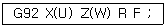
- 리드(lead)
- 바깥지름
- 테이퍼 값
- Z축 좌표값
(정답률: 70%)
53. 아래 NC 프로그램에서 N20블록을 수행할 때 주축 회전수는 몇 rpm인가?
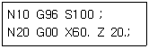
- 361
- 451
- 531
- 601
(정답률: 50%)
54. 선과 점을 이어 단순히 면을 표현하며 뼈대로만 구성되는 모델링 기법은?
- 솔리드
- 서피스
- 프랙털
- 와이어 프레임
(정답률: 63%)
55. 머시닝센터에서 공구교환을 지령하는 보조기능은?
- G기능
- S기능
- F기능
- M기능
(정답률: 61%)
56. CNC선반의 공구기능 T0304의 내용이 아닌 것은?
- 공구번호 03번을 지령한다.
- 공구보정번호 04번을 지령한다.
- 공구 보정량이 X3㎜이고, Z4㎜이다.
- 공구번호와 보정번호를 다르게 지령해도 관계없다.
(정답률: 59%)
57. CNC선반에서 A에서 B로 이동할 때의 프로그램으로 맞는 것은?
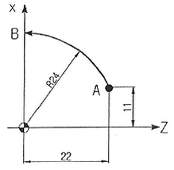
- G02 X0. Z24. 1-11. K11. F0.1 ;
- G02 X0. Z24. 1-22. K-11. F0.1 ;
- G03 X48. Z0. 1-11. K-22. F0.1 ;
- G03 X48. Z0. 1-22. K-22. F0.1 ;
(정답률: 47%)
58. 머시닝센터 프로그래밍에서 공구지름 우측보정 G-코드는?
- G40
- G41
- G42
- G43
(정답률: 57%)
59. 준비기능의 모달(modal) G-코드 설명 중 틀린 것은?
- 모달 G-코드는 그룹별로 나누어져 있다.
- 모달 G-코드 G02가 반복 지령되면 다음 블록의 G02는 생략할 수 있다.
- 같은 그룹의 모달 G-코드를 한 블록에 지령하여 동시에 실행시킬 수 있다.
- 모달 G-코드는 같은 그룹의 다른 G-코드가 나올 때까지 다음 블록에 영향을 준다.
(정답률: 56%)
60. 머시닝센터를 이용하여 SM30C를 절삭속도 70m/min으로 가공하고자 한다. 공구는 2날-020 엔드밀을 사용하고 절삭폭과 절삭깊이를 각각 7㎜씩 주었을 때, 칩 배출량은 약 몇 cm3/min 인가? (단, 날당 이송은 0.1 ㎜이다.)
- 5.5
- 11
- 16.5
- 20
(정답률: 40%)